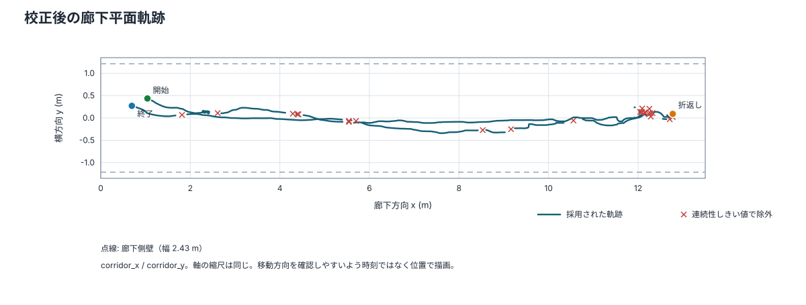
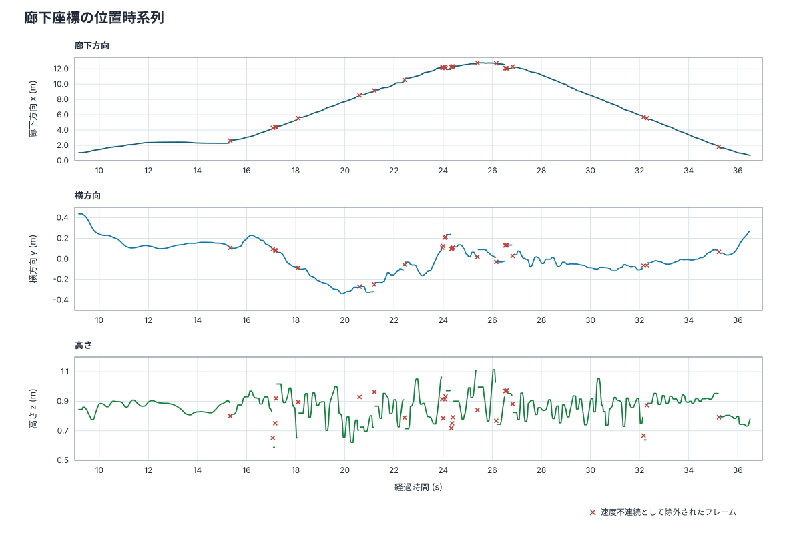
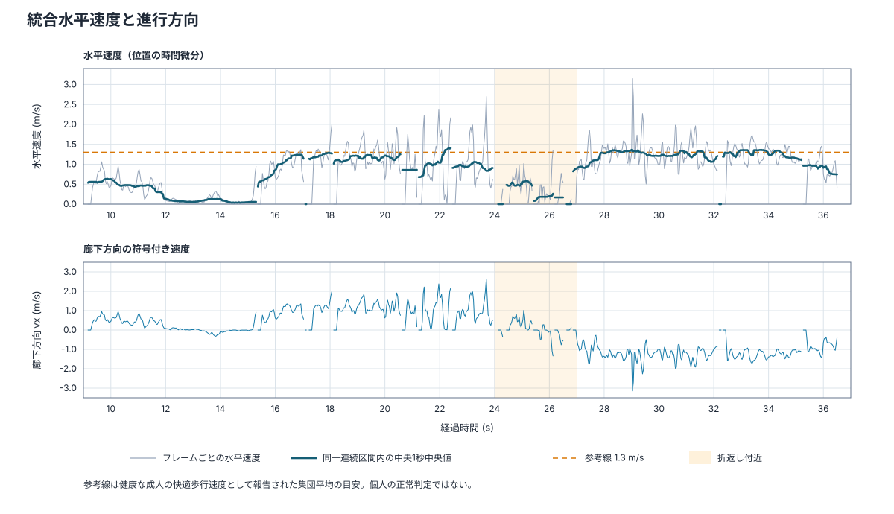
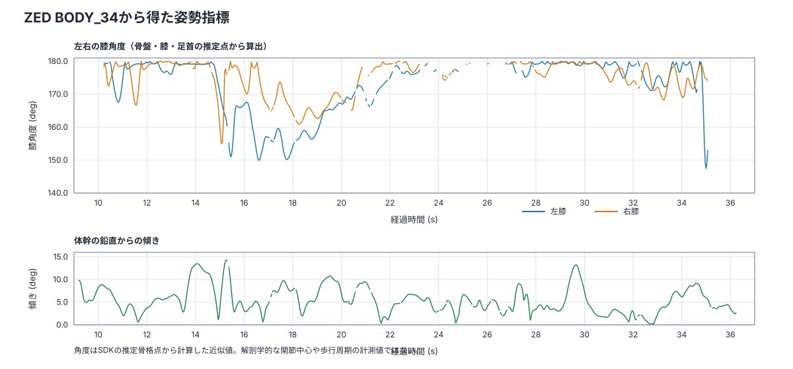

入力: fused_trajectory.csv。ZEDとLiDARは録画内タイムスタンプで対応付け、校正後の廊下座標で統合しています。
| 録画内観測 | 818 frames / 27.33 s、中央値フレーム間隔 33.4 ms |
|---|---|
| センサー統合 | LiDAR対応 577/818 (70.5%) |
| 連続性判定 | 有効 794 frames、除外 24 (2.9%)、18連続区間 |
| 廊下方向 x | 0.69–12.77 m |
| 横方向 y | -0.34–0.44 m (幅 0.78 m) |
| 高さ z | 0.59–1.11 m |
| 水平速度 | 中央値 0.92 m/s、p90 1.48、p95 1.67、最大 3.15。2 m/s超は 10 frames |
| 折返し | 約 25.4 s、x=12.77 m |
| 連続点の高さ変化 | フレーム間絶対変化 p95 0.075 m。高周波の上下揺れは実際の身体運動と深度・骨格推定誤差を分離できません。 |




膝角度中央値は左 176.8°、右 177.3°で、記録の大半はほぼ伸展側にあります。体幹傾き中央値は 5.0°です。両足首角はそれぞれ 129.805–129.806°、129.805–129.806°とほぼ一定で、歩行中の足首運動を評価する信号としては使えません。
速度の参考値: 若年成人の快適な地上歩行速度 1.37 ± 0.16 m/s を報告した研究。年齢や条件により変わる集団平均であり、この記録の正常・異常を判定する閾値ではありません。PubMed: The effect of treadmill and overground walking on preferred walking speed and gait kinematics in healthy, physically active older adults
位置はZED SDKの骨盤付近深度とLiDAR人物クラスタ中心を信頼度加重で統合し、廊下方向はLiDARを最低70%反映した値です。LiDAR対応率は 70.5%で、残りはZED単独です。床・平行壁による外部校正では廊下方向の並進が観測できないため、その成分は初期取り付け測定値を保持しています。廊下方向の絶対原点にはその不確かさが残ります。融合位置のセンサー間残差は真値に対する位置誤差ではありません。フレーム連続性しきい値で除外された点はグラフに赤い×で示します。